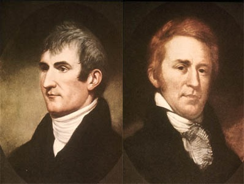

a treatise on a Pivotal core practice
(I soloed on this presentation.)
- But you should listen to me, anyway.
- webster's dictionary defines it as ... j/k
A Practice is a path
towards a Goal or Principle

A Practice is just one possible path
(of many possible Paths)
towards a Goal or Principle
there are many ways to grow quality software
but this one is ours
what this talk is not about
- we're not going to talk about how to pair
- you should know to remember to eat a breath mint
- because you have empathy
- we're not going to focus on software development
what this talk is about
- why we pair - what goals are we trying to achieve?
- what we think are the benefits of pairing
- pairing showing up in some unexpected places
- attributes that all pairing scenarios have in common
- my goal is to help y'all have a conversation with this guy about why pairing is valuable
context: XP practices
- let's first talk about the context in which we execute our practices
- using poor practices, you can usually get a good, fast start on software

- but you'll get dimishing returns as the code ossifies
- with good practices you can theoretically add new features at a steady pace forever
- there's a crossover at t1
- if you're exiting before t1, go ahead and throw away all our good XP practices
- this might be the start of an answer to a good question ...
"When is pair programming worth the trade-off in resources?"
at pivotal
- problem space is big and unknown: ✓
at pivotal
- problem space is big and unknown: ✓
- solution space is big and unknown: ✓
at pivotal
- problem space is big and unknown: ✓
- solution space is big and unknown: ✓
- you need to build relationships: ✓
- great, but why?
- what problems are we trying to solve at Pivotal?
- what are our goals?
Teaching and Learning
you can do it forever
- programming, design, and product skills don't have a biological ceiling like athletes do
- we'll come back to this later
Shared Ownership
"we" instead of "us versus them"
succeed or fail together
- rotating pairs create a healthy sense of shared ownership
- and improves the bus count
Building a 10x Team
better than a 10x ninja rockstar
Build the Right Thing
avoid ratholes
ask "why?"
go meta
- helps people focus on the task at hand
- occasionally pop your head out of the specific problem
- talk about whether you're solving the right problem
Build the Thing Right
keep each other honest
don't cut corners
use domain language
Finding the Right Abstractions
- explaining it to your pair is the first step towards identifying the correct abstraction
- meaning less tech debt and better problem-solving
(I wrote a blog post about this)
What other goals do you have when you pair?
- "can't you just have one person per job?"
- "can't you just do your job right in the first place?"
- nature has evolved pair bonding when the job is difficult
- clearly, evolution thinks that sometimes it takes two
- parenting is hard!
- dating is hard!
- "successful software comes from the mind of a sole creative genius"
- bill gates and paul allen
- "great art comes from the mind of a sole creative genius"
Great Art™ can indeed come from a lone genius.
B-b-b-benny and the Jets
- elton john and bernie taupin
- elton got much worse after the pair split
I am a Rock
- simon and garfunkel
- simon got much better after the pair split
The Hill are Alive with ... a Modern Major General
- rodgers and hammerstein
- gilbert and sullivan
The Colbert Show writing team
Magnolia
- aimee mann and michael penn
Let It Go
- the writers of Frozen whose names nobody knows
Anything Starring Matt Damon and Ben Affleck
- but exploring a complex problem domain means somebody needs to be in charge
I'm Gonna Need a Right-Hand Man
X-Rays
- marie and pierre curie shared the 1903 nobel prize in Physics

Crossing North America
Dr. Livingstone, I Presume?
- but those are all instances where it's cheap to pair
"she's lost that loving feeling."
... "i hate it when she does that."
- pilot / navigator
- not just for picking up people in bars
BTW the "Top Gun" script was the result of pairing, too.
- there are two seats in some 2g and 3g jet fighters
- this is incredibly expensive
- additional life support systems
- less room for fuel
- 2x the training cost for people
- how did this happen?
dealing with cognitive overhead
and multitasking
"[electronic] systems, intended to increase pilot situational
awareness, ended up doing the exact opposite, forcing the pilot to
keep his head `in the cockpit' reading gauges and displays, with [lower]
situational awareness ..."
"The supersonic aerial equivalent of checking his Facebook on his phone
while he's dodging traffic doing 80 down a busy highway."
"Flying a fighter jet is hard and very demanding, and if a guy in the
sky wants to do anything while he's in the air, like dropping bombs,
finding targets, navigating, listening or trying to take pictures,
it's very helpful to have somebody who doesn't need to keep the thing
in the air to help."
Not a tactical / strategic split
WSOs perform both strategic and tactical jobs
strategic: navigation
tactical: guiding bombs to targets
- it's more about multitasking than it is about separation of concerns
- look! two people in a car racing
- endurance / focus
- driver's cognitive overhead similar to a fighter jet
consider pilot skill versus programming and design skills
Developers, Designers, PMs are always learning and getting better.
- pilot skill has a ceiling, based in biology
- programming skill doesn't really have an effective ceiling
- you can keep learning forever, so pairing forever makes even more sense for software
also: training
Most tactical aircraft also have training versions, which are indeed
two-seaters with dual flight controls with the instructor sitting in
the back.
what do all these things have in common?
(1). difficult tasks
* explorers
* parents
* rally racers
* fighter jet pilot / wso
* president / treasury secretary
(2). requires a broad skill set that may not be present in one person
* fighter jet pilot / wso
* composer / lyricist
* developer / designer
* designer / PM
* developer / developer
* nerd / businessdog
* director / producer / screenwriter
* president / treasury secretary
(3). exploration: finding your way through ...
* a large problem space
* a large solution space
* the wilderness
* political fights
* scientific discovery
(4). teaching and learning
* fighter jet trainers
* pair programming
* pair design
(5). shared ownership and shared success
* pair programming and design
* parenting
* rally racing
* comedy writing
* exploration
* scientific discovery
(6). ensuring quality, reducing errors, robust focus on task
* rally racing
* fighter jets
* composer / lyricist
* pair programming
* pair design
* president / treasury secretary
* comedy writing
* scientific discovery
there are exceptions, obvs
for every elton john, there's a paul simon
- remember that even though paul simon got better after leaving garfunkel, elton john got worse after he stopped collaborating with bernie taupin
there are many ways to grow quality software
but this one is ours
WDYT?
why else do we pair?
why do we pair all the time?
is there a time to not pair?